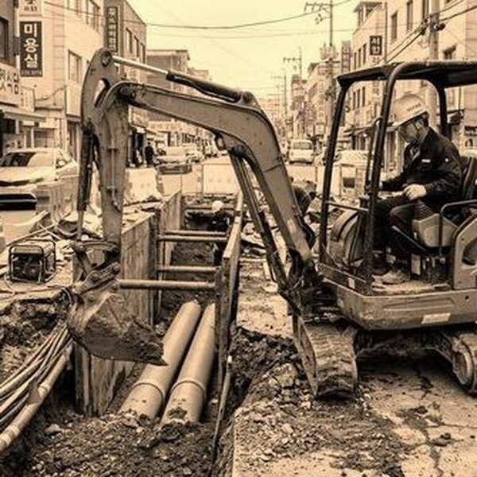
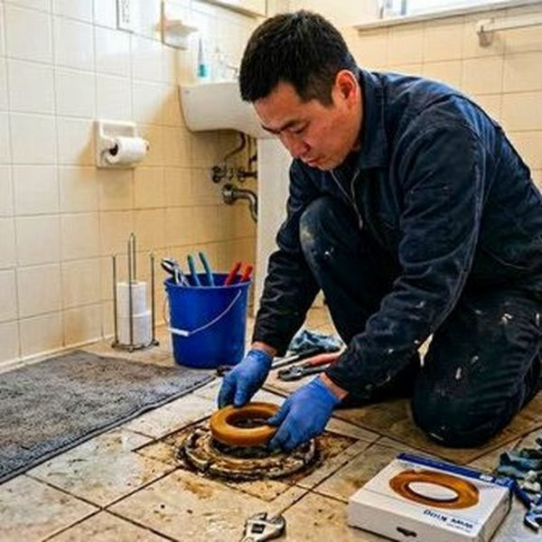
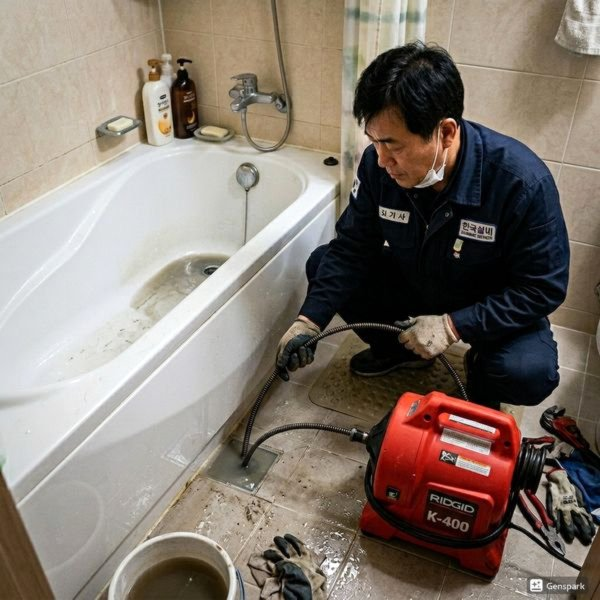

제우스시설관리 | 2025년 4월

수도꼭지는 가정에서 가장 자주 사용되는 시설 중 하나입니다. 하루에 수십 번 사용되면서 자연스럽게 부식되고 마모되기 때문에, 적절한 시기에 교체해야 합니다.
1. 지속적인 물샘 (흘러내림) - 밸브를 잠궈도 물이 계속 떨어집니다. 처음에는 1시간에 1방울 정도지만, 방치하면 월 물세 증가로 이어집니다.
2. 수압이 약해졌다 - 내부 필터가 오염되었을 가능성이 높습니다. 때론 교체로 수압이 완전히 복구됩니다.
3. 녹색/갈색 변색 - 구리 부식 또는 성분 변질 신호입니다. 물의 맛과 냄새에 영향을 줄 수 있습니다.
4. 소음이 난다 - '키익' 또는 '윙' 소리는 내부 밸브 마모 신호입니다.
✅ 스패너 또는 파이프 렌치 (수도꼭지 크기에 맞게)
✅ 드라이버 세트
✅ 새 수도꼭지 (호환 규격 확인)
✅ 테프론 테이프 (나선부 방수용)
✅ 수도꼭지 시일링 제품
1단계: 물 공급 차단
먼저 싱크대 아래의 밸브를 닫아 물 공급을 차단합니다. 밸브가 없거나 안 잠기면, 메인 수도 밸브를 차단해야 합니다.
2단계: 남은 물 배출
수도꼭지를 켜서 배관 내 남은 물을 완전히 빼냅니다.
3단계: 기존 수도꼭지 제거
렌치를 사용하여 싱크대 아래 나사를 풀어 기존 꼭지를 제거합니다. 녹이 있으면 녹 제거제를 사용합니다.
4단계: 새 수도꼭지 설치
새 꼭지의 나선 부분에 테프론 테이프를 3~4번 감싸 줍니다. 그 후 연결부에 수도꼭지를 끼워 렌치로 단단히 조입니다.
5단계: 누수 확인
물을 켜서 연결부와 꼭지 밑동에서 물이 새지 않는지 확인합니다. 새면 추가로 조여줍니다.
벽 속 배관이 손상되었거나, 녹물이 계속 나오는 경우, 또는 교체 후에도 누수가 계속되면 배관 자체 문제입니다. 이런 경우 제우스시설관리에 문의하면 내시경으로 정확히 진단할 수 있습니다.

